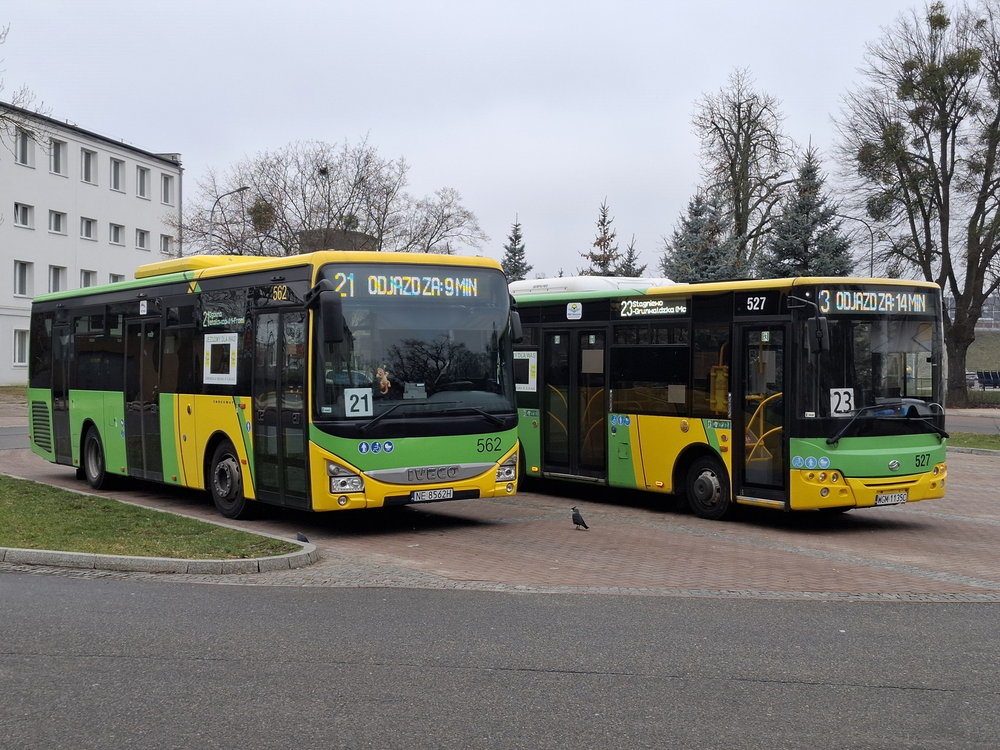
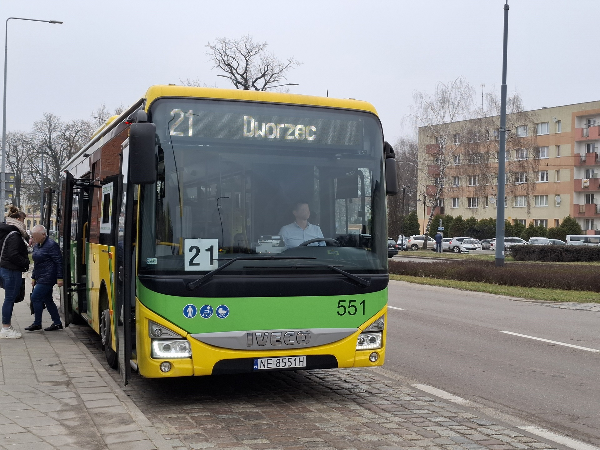
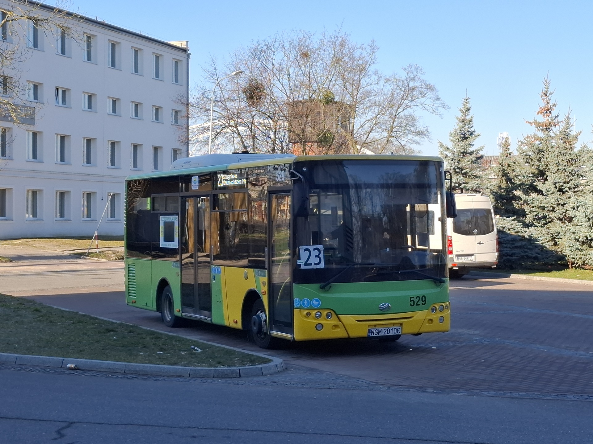
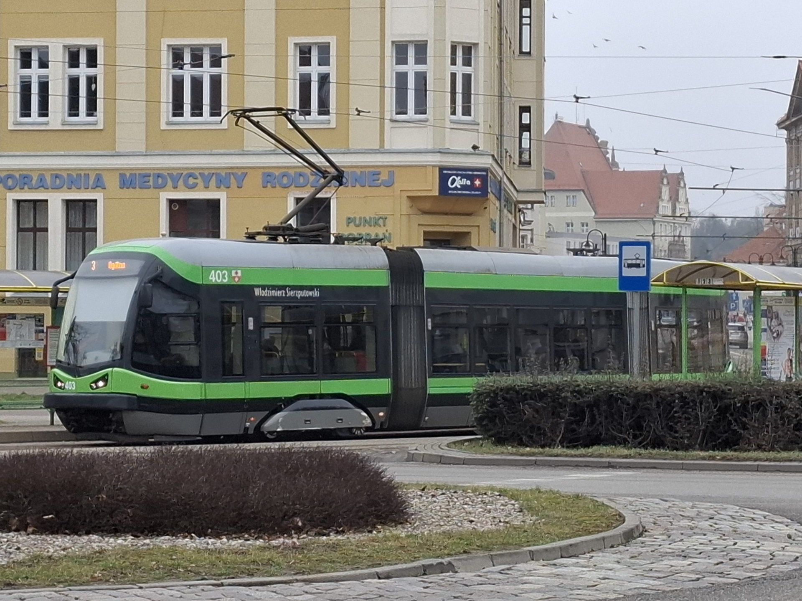
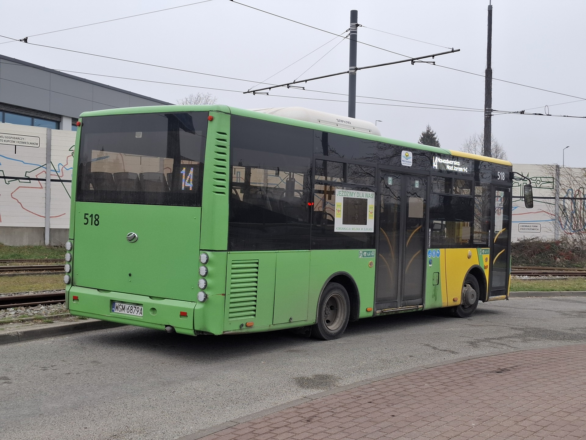
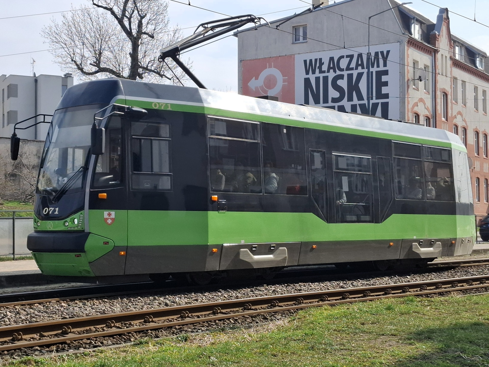
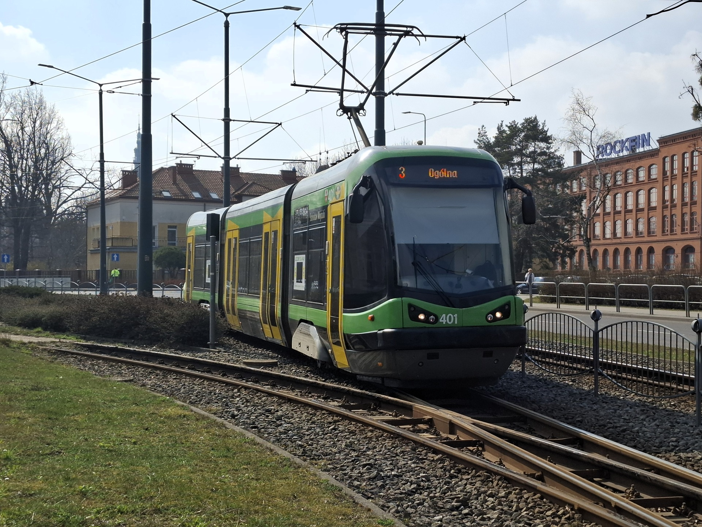
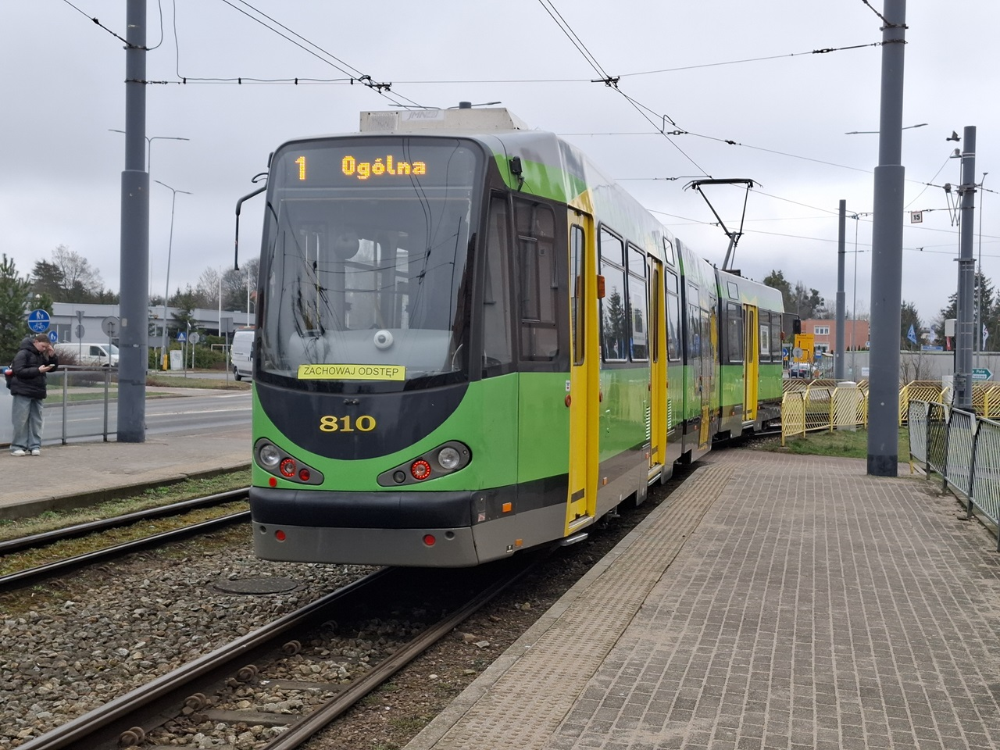

Dworzec pętla - Iveco #562 oraz ZAZ #527 oczekuje odjazdu
13.03.2025

Plac Słowiański - Iveco #551 na linii 21
13.03.2025

Dworzec pętla - ZAZ #529 oczekuje odjazdu na linii 23 kier. Stagniewo
20.03.2025

Plac Słowiański - Pesa 121N #403 na linii 3 kierunek Ogólna
13.03.2025

Ogólna pętla - ZAZ #518 oczekuje odjazdu na linii 14 kier. Nowodworska
13.03.2025

Robotnicza (Królewiecka) - Moderus Beta #071 odbywa postój na przystanku linia 1 kier. Ogólna
25.03.2025

Browarna (Królewiecka) - Pesa Tramicus #401 zbliża się do przystanku lina 3 kier. Ogólna
25.03.2025

Pętla Druska - Man M8C #810 zjeżdża na pętle